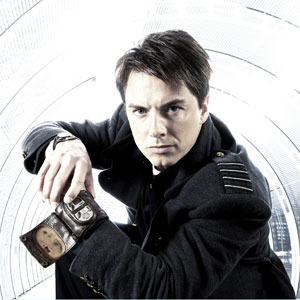

| Rose Tyler |
| Amy Pond |
| Martha Jones |
| Jack Harkness |
| Lady Christina de Souza |
| Rory Williams |
| River Song |
| Clara Oswald |
Jack Harkness
Portrayed by John Barrowman.
Captain Jack Harkness is a fictional character played by John Barrowman in Doctor Who and its spin-off series, Torchwood. He first appeared in the 2005 Doctor Who episode "The Empty Child" and reappeared in the remaining episodes of the 2005 series as a companion of the ninth incarnation of the series' protagonist the Doctor. Jack became the central character in the adult-themed Torchwood, and returned in the 2007 series of Doctor Who, reuniting with the tenth incarnation of the Doctor, and again for the 2008 series and a 2010 special.
In the program's narrative, Jack begins as a time traveler and former con man from the 51st century. In contrast to the Doctor, Jack is a man of action, more willing to apply a hands-on solution to a problem. As a consequence of his death and resurrection in the 2005 series finale of Doctor Who, the character gains immortality. On Earth, Jack becomes a member of Torchwood, a British organization dedicated to combating alien threats, becoming its leader over a century later. An ambiguous backstory is gradually revealed in the course of both series, adding another layer of complexity to the character.
Jack is the first openly non-heterosexual character in the history of televised Doctor Who. The popularity of the character amongst multiple audiences directly influenced the development of the spin-off series Torchwood. The character became a figure of the British public consciousness, rapidly gaining fame for portrayer John Barrowman. As an ongoing depiction of bisexuality in mainstream British television, the character became a role model for young gay and bisexual people in the UK. Jack is featured in various Doctor Who and Torchwood books and has action figures created in his likeness.